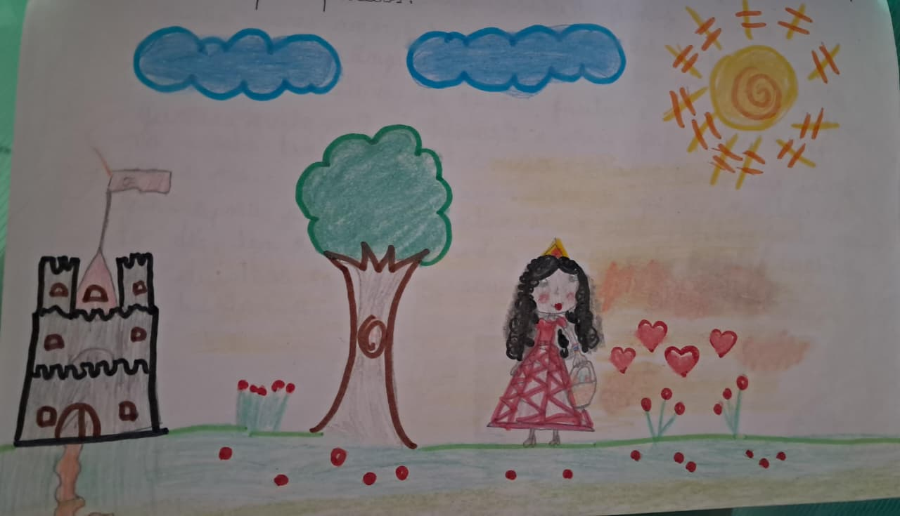

A Princesa Mariellen

Era uma vez uma princesa muito bonita. Ela era muito diferente de todas; o seu nome era Mariellen. Ela era muito linda. Ela ajudava muitas pessoas. Mariellen tinha muitos amigos.
Em um lindo dia de sol, Mariellen foi dar um passeio pela floresta e encontrou uma menina muito triste.
— Oi, você está perdida?
— Estou sim — disse Dani.
— O que é isso no seu dedo?
— Foi uma agulha que furou o meu dedo. Eu estava na casa da minha avó quando uma bruxa me furou.
Mariellen disse:
— Vamos para minha casa, eu vou te ajudar.
As meninas andaram muito até chegar perto de um castelo. Dani perguntou:
— Essa é a sua casa, Mariellen? Você é uma princesa? Você mora nesse castelo?
— Calma, Dani, vamos entrar que eu vou te responder.
Depois que Mariellen respondeu todas as perguntas de Dani, Mariellen contou que tinha uma mãe bem morena, com uma cor muito escura, como uma noite de estrelas. Dani perguntou:
— Mariellen, por que você não usa roupas de uma verdadeira princesa?
— Porque tenho vergonha. E também as pessoas não vão acreditar que eu, usando roupas simples, posso ser uma princesa.
Dani disse:
— Eu acho que pessoas como você merecem ser, sim, uma princesa.
Depois de um tempo, Mariellen disse:
— Dani, agora vamos cuidar do seu dedo ferido.
Mariellen colocou um curativo no dedo de Dani.
— Obrigada, Mariellen! Meu dedo não dói mais.
Mariellen pensou e chegou a uma conclusão:
— Eu quero ser uma princesa, mas não vou parar de ajudar as pessoas.
Mariellen foi até a casa da sua avó e pediu para ela fazer uns lindos vestidos de princesa. Depois de um tempo, os vestidos já estavam prontos. Passaram alguns dias e as pessoas começaram a chamá-la de Princesa Mariellen.
E assim Mariellen continuou com seu jeito de bondade e amor, sempre fazendo o bem pelas pessoas.
Esta história foi escrita por Isabelle Diniz quando ela tinha apenas 9 anos. Foi decidido manter a escrita original para preservar a essência da obra; por isso, o texto contém alguns "erros" gramaticais.